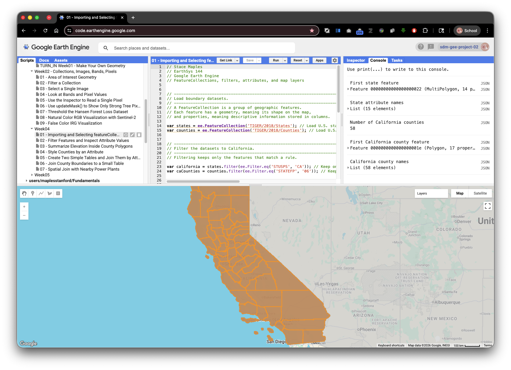
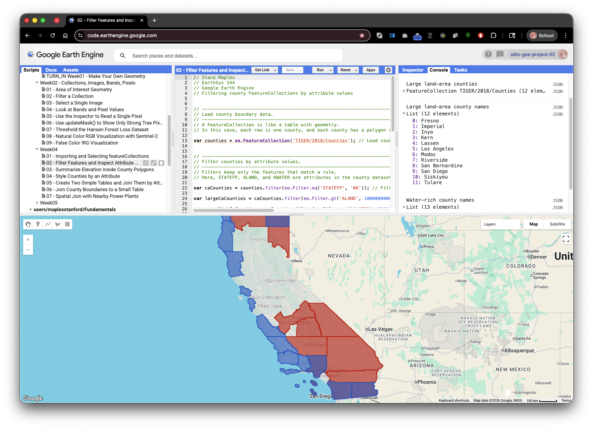
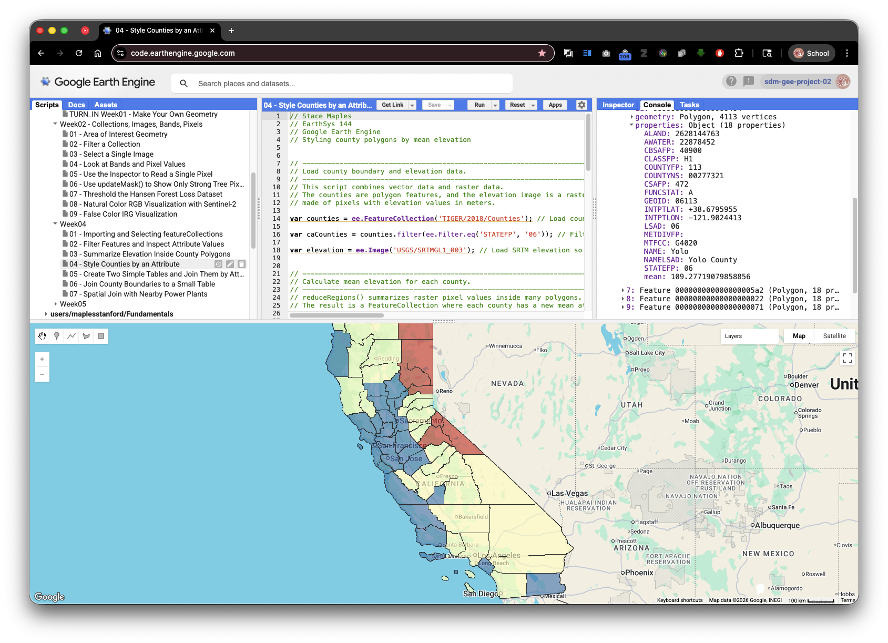
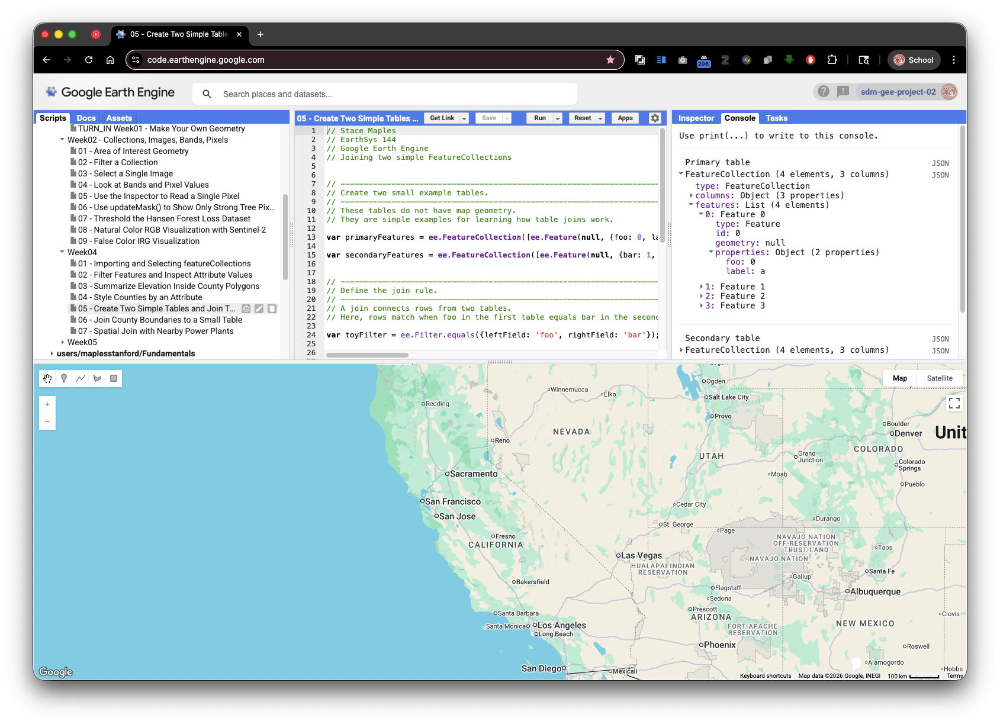
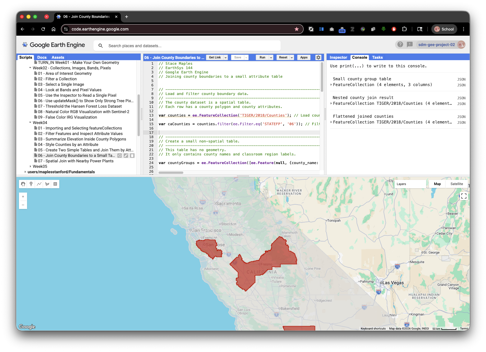
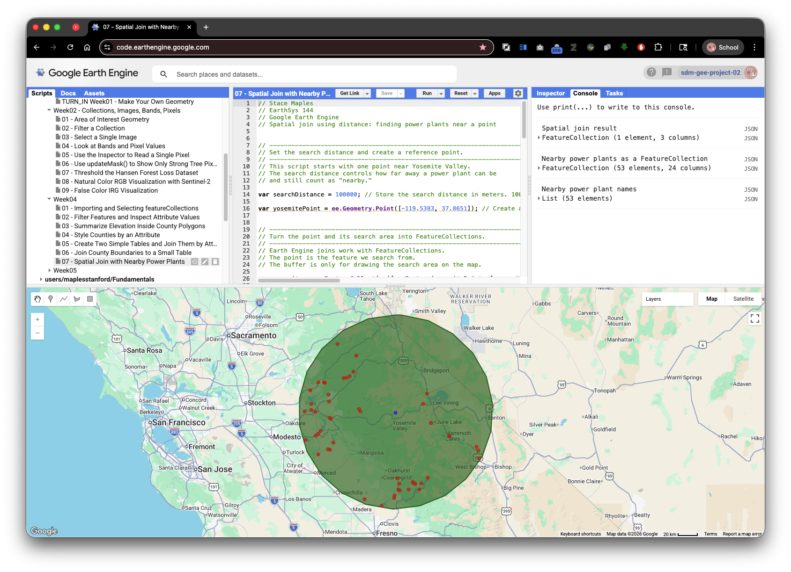
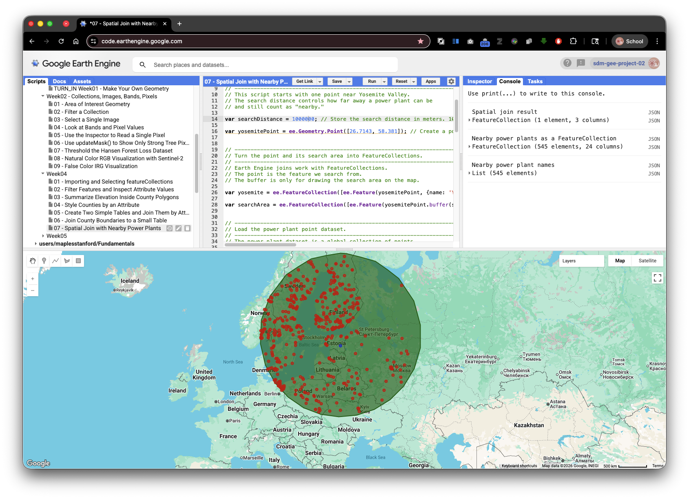

TURN IN: Tabular and Vector Data in Google Earth Engine
Lab Overview
This lab introduces FeatureCollection data in Google Earth Engine. A FeatureCollection is a table of geographic features. Each row is a Feature, each feature has a geometry, and each feature has attributes stored as name-value pairs.
In spatial analysis, vector data are often used to represent boundaries, points, lines, and places with named attributes. In this lab, you will use county boundaries, state boundaries, raster elevation data, and point locations to practice asking questions such as:
- Which rows belong to California?
- What attribute columns are available?
- What values are stored in a particular attribute?
- How can a raster image, such as elevation, be summarized inside polygon boundaries?
- How can features be styled based on an attribute?
- How can two tables be joined by matching attribute values?
- How can two collections be joined by spatial distance?
All scripts below are written for the Google Earth Engine Code Editor using the JavaScript API. Each script is self-contained, so you can paste one script at a time into a blank Earth Engine script and run it.
Data Used
TIGER/2018/States: United States state boundaries from the U.S. Census Bureau TIGER/Line data.TIGER/2018/Counties: United States county boundaries from the U.S. Census Bureau TIGER/Line data.USGS/SRTMGL1_003: Shuttle Radar Topography Mission elevation data, distributed through the USGS and NASA, with elevation values in meters.- A Yosemite-area reference point created directly in Script 7.
WRI/GPPD/power_plants: Global Power Plant Database point data from the World Resources Institute.
Learning Objectives
By the end of this lab, you should be able to:
- Load a
FeatureCollectionfrom the Earth Engine Data Catalog. - Inspect feature attributes in the Console.
- Filter a
FeatureCollectionusing attribute values. - Create lists of attribute names and attribute values.
- Summarize raster values inside polygons using
reduceRegions. - Style vector data using an attribute.
- Join two feature tables using matching attributes.
- Join two feature collections using spatial distance.
Important Concept: Features, Geometries, and Attributes
A Feature is a geographic object plus information about that object. For example, a county feature has:
- A geometry: the county boundary drawn as a polygon.
- Attributes: values such as county name, state code, land area, and water area.
A FeatureCollection is a group of features. It behaves like a table, but it is stored and processed on Earth Engine servers. This matters because Earth Engine does not immediately download the full table to your computer. Instead, you build a set of instructions, and Earth Engine evaluates those instructions when you print, map, chart, export, or otherwise request results.
Script 1: Load and Inspect a FeatureCollection
This script loads U.S. state and county boundaries, filters counties to California, prints attributes, and adds the results to the map.
// Stace Maples
// EarthSys 144
// Google Earth Engine
// FeatureCollections, filters, attributes, and map layers
// -----------------------------------------------------------------------------
// Load boundary datasets.
// -----------------------------------------------------------------------------
// A FeatureCollection is a group of geographic features.
// Each feature has a geometry, meaning its shape on the map,
// and properties, meaning descriptive information stored in columns.
var states = ee.FeatureCollection('TIGER/2018/States'); // Load U.S. state boundaries as a FeatureCollection so we can inspect and filter state features.
var counties = ee.FeatureCollection('TIGER/2018/Counties'); // Load U.S. county boundaries as a FeatureCollection so we can work with smaller administrative areas.
// -----------------------------------------------------------------------------
// Filter the datasets to California.
// -----------------------------------------------------------------------------
// Filtering keeps only the features that match a rule.
var california = states.filter(ee.Filter.eq('STUSPS', 'CA')); // Keep only the state feature whose postal abbreviation attribute is CA.
var caCounties = counties.filter(ee.Filter.eq('STATEFP', '06')); // Keep only counties whose state FIPS code is 06, the Census code for California.
// -----------------------------------------------------------------------------
// Display the layers on the map.
// -----------------------------------------------------------------------------
// After running the script, use the Layers widget in the upper-right corner
// of the map to turn layers on and off.
Map.centerObject(california, 6); // Center the map on California so the filtered features are visible when the script runs.
Map.addLayer(states, {color: 'cccccc'}, 'All U.S. states'); // Draw all state boundaries in light gray to provide national context.
Map.addLayer(california, {color: '0066cc'}, 'California state boundary'); // Draw California in blue so the filtered state is easy to identify.
Map.addLayer(caCounties, {color: 'ff9900'}, 'California counties'); // Draw California county boundaries in orange so the county FeatureCollection is visible.
// -----------------------------------------------------------------------------
// Print basic information to the Console.
// -----------------------------------------------------------------------------
// Use the Console tab to inspect printed objects.
// Click the small arrows to expand features, properties, and lists.
print('First state feature', states.first()); // Print one state feature so you can expand it and see its geometry and attributes.
print('State attribute names', states.first().propertyNames()); // Print the column names stored in the first state feature.
print('Number of California counties', caCounties.size()); // Count the number of county features that remain after filtering to California.
print('First California county feature', caCounties.first()); // Print one California county so you can inspect the county-level attributes.
// -----------------------------------------------------------------------------
// Create and print a sorted list of California county names.
// -----------------------------------------------------------------------------
// aggregate_array() collects values from one attribute column into a list.
var countyNames = caCounties.aggregate_array('NAME').sort(); // Collect the NAME value from each California county and sort the names alphabetically.
print('California county names', countyNames); // Print the county name list so you can see values from one attribute column.
Check Your Understanding
- What is the difference between
statesandcalifornia? - Why does
caCountiesuseSTATEFPinstead ofSTUSPS? - In the Console, expand one feature. Where are the attribute values stored?

Script 2: Filter Features and Inspect Attribute Values
Filtering is one of the most important operations in spatial data analysis. A filter asks Earth Engine to keep only rows that meet a condition.
This script uses county land area and water area attributes to find large California counties and coastal or water-rich counties.
// Stace Maples
// EarthSys 144
// Google Earth Engine
// Filtering county FeatureCollections by attribute values
// -----------------------------------------------------------------------------
// Load county boundary data.
// -----------------------------------------------------------------------------
// A FeatureCollection is like a table with geometry.
// In this case, each row is one county, and each county has a polygon shape.
var counties = ee.FeatureCollection('TIGER/2018/Counties'); // Load county polygons so each row represents one U.S. county.
// -----------------------------------------------------------------------------
// Filter counties by attribute values.
// -----------------------------------------------------------------------------
// Filters keep only the features that match a rule.
// Here, STATEFP, ALAND, and AWATER are attributes in the county dataset.
var caCounties = counties.filter(ee.Filter.eq('STATEFP', '06')); // Filter the national county table to only California counties.
var largeCaCounties = caCounties.filter(ee.Filter.gt('ALAND', 10000000000)); // Keep counties with more than 10 billion square meters of land area.
var waterRichCaCounties = caCounties.filter(ee.Filter.gt('AWATER', 500000000)); // Keep counties with more than 500 million square meters of water area.
// -----------------------------------------------------------------------------
// Display the filtered county layers on the map.
// -----------------------------------------------------------------------------
// Use the Layers widget to turn each layer on and off.
// This makes it easier to compare all counties with the filtered results.
Map.centerObject(caCounties, 6); // Center the map on the California county collection.
Map.addLayer(caCounties, {color: 'dddddd'}, 'All California counties'); // Draw all California counties in light gray as a reference layer.
Map.addLayer(largeCaCounties, {color: 'cc0000'}, 'Large land-area counties'); // Draw large land-area counties in red so the filter result stands out.
Map.addLayer(waterRichCaCounties, {color: '0066cc'}, 'Water-rich counties'); // Draw water-rich counties in blue so a second filter result can be compared.
// -----------------------------------------------------------------------------
// Print attribute information and filter results to the Console.
// -----------------------------------------------------------------------------
// Use the Console to inspect attributes and confirm which counties passed
// each filter. Click the small arrows to expand printed objects.
print('All California county attribute names', caCounties.first().propertyNames()); // Print the available county attributes before choosing fields for analysis.
print('Large land-area counties', largeCaCounties); // Print the filtered collection so you can inspect which rows passed the land-area condition.
print('Large land-area county names', largeCaCounties.aggregate_array('NAME').sort()); // Print only the names of counties that passed the land-area condition.
print('Water-rich county names', waterRichCaCounties.aggregate_array('NAME').sort()); // Print only the names of counties that passed the water-area condition.
print('Land area values for all California counties', caCounties.aggregate_array('ALAND')); // Print the raw land-area values to connect the table attribute to the filter.
Check Your Understanding
- What does
ee.Filter.gt()mean? - Why are the
ALANDandAWATERvalues so large? - How would you change the script to find counties with small land area?

Script 3: Summarize Elevation Inside County Polygons
Raster data, such as elevation, are stored as grids of pixels. Vector data, such as counties, are stored as shapes. A common spatial analysis task is to summarize raster pixels inside vector boundaries.
This script calculates mean SRTM elevation for each California county. This operation is often called zonal statistics because each polygon is a zone and the raster is summarized within each zone.

// Stace Maples
// EarthSys 144
// Google Earth Engine
// Summarizing raster elevation values by county polygons
// -----------------------------------------------------------------------------
// Load county boundary data.
// -----------------------------------------------------------------------------
// Counties are polygon features.
// In this script, each county polygon will be used as a zone for summarizing
// the elevation raster values inside it.
var counties = ee.FeatureCollection('TIGER/2018/Counties'); // Load county polygons so each county can be used as a zone for summarizing elevation.
var caCounties = counties.filter(ee.Filter.eq('STATEFP', '06')); // Filter to California counties so the analysis is focused and faster.
// -----------------------------------------------------------------------------
// Load and symbolize elevation data.
// -----------------------------------------------------------------------------
// A raster image is made of pixels.
// In this image, each pixel stores an elevation value in meters.
var elevation = ee.Image('USGS/SRTMGL1_003'); // Load SRTM elevation as a raster image with elevation values in meters.
var elevationVis = {min: 0, max: 4000, palette: ['1a9850', 'fee08b', 'd73027']}; // Define visualization settings so low, middle, and high elevations draw in different colors.
// -----------------------------------------------------------------------------
// Calculate mean elevation by county.
// -----------------------------------------------------------------------------
// reduceRegions() summarizes raster pixel values inside many polygons.
// The reducer decides what statistic to calculate. Here, mean means average.
var countyMeanElevation = elevation.reduceRegions({collection: caCounties, reducer: ee.Reducer.mean(), scale: 90}); // Calculate the mean elevation of raster pixels inside each county polygon.
var sortedMeanElevation = countyMeanElevation.sort('mean', false); // Sort counties from highest mean elevation to lowest mean elevation.
// -----------------------------------------------------------------------------
// Display the elevation raster and county boundaries on the map.
// -----------------------------------------------------------------------------
// Use the Layers widget to turn the elevation and boundary layers on and off.
// This helps compare the raster surface with the county zones.
Map.centerObject(caCounties, 6); // Center the map on California so the counties and elevation layer are visible.
Map.addLayer(elevation, elevationVis, 'SRTM elevation'); // Draw the elevation raster so you can visually compare terrain with county boundaries.
Map.addLayer(caCounties, {color: '000000'}, 'California county boundaries'); // Draw county boundaries in black so the zonal statistics zones are visible.
// -----------------------------------------------------------------------------
// Print the results to the Console.
// -----------------------------------------------------------------------------
// Open the Console tab to inspect the output.
// The county features now include a new mean attribute created by reduceRegions().
print('County mean elevation results', countyMeanElevation); // Print the output FeatureCollection, which now includes a new mean attribute.
print('Highest mean elevation counties', sortedMeanElevation.limit(10)); // Print the ten counties with the highest mean elevation values.
print('Mean elevation attribute values', countyMeanElevation.aggregate_array('mean')); // Print the new mean elevation values as a list for quick inspection.
Why Use reduceRegions?
reduceRegions applies a reducer to many features at once. In this example:
- The raster is
elevation. - The zones are
caCounties. - The reducer is
ee.Reducer.mean(). - The output is a new
FeatureCollectionwith one result per county.
The scale argument tells Earth Engine the pixel size, in meters, to use for the calculation. SRTM has a native resolution of about 30 meters in many places, but this lab uses 90 meters so the classroom script runs more quickly.
Script 4: Style Counties by an Attribute
Earth Engine can draw features with styles based on their attributes. This is useful for turning a table column into a map pattern.
This script reuses mean elevation from Script 3 and creates a new color attribute for each county. The map then uses that color attribute to draw lower, middle, and higher elevation counties differently.
// Stace Maples
// EarthSys 144
// Google Earth Engine
// Styling county polygons by mean elevation
// -----------------------------------------------------------------------------
// Load county boundary and elevation data.
// -----------------------------------------------------------------------------
// This script combines vector data and raster data.
// The counties are polygon features, and the elevation image is a raster
// made of pixels with elevation values in meters.
var counties = ee.FeatureCollection('TIGER/2018/Counties'); // Load county polygons so each row can be styled on the map.
var caCounties = counties.filter(ee.Filter.eq('STATEFP', '06')); // Filter to California counties so the map focuses on one state.
var elevation = ee.Image('USGS/SRTMGL1_003'); // Load SRTM elevation so each county can receive a mean elevation value.
// -----------------------------------------------------------------------------
// Calculate mean elevation for each county.
// -----------------------------------------------------------------------------
// reduceRegions() summarizes raster pixel values inside many polygons.
// The result is a FeatureCollection where each county has a new mean attribute.
var countyMeanElevation = elevation.reduceRegions({collection: caCounties, reducer: ee.Reducer.mean(), scale: 90}); // Add a mean elevation attribute to each county using raster pixels inside each polygon.
// -----------------------------------------------------------------------------
// Create a style for each county based on its mean elevation.
// -----------------------------------------------------------------------------
// map() runs the same function once for every feature in a FeatureCollection.
// Here, each county receives a style property based on its mean elevation.
var styledCounties = countyMeanElevation.map(function(feature) { // Start a function that runs once for every county feature.
var meanElevation = ee.Number(feature.get('mean')); // Read the county's mean elevation value and store it as an Earth Engine number.
var lowColor = ee.String('2c7bb6'); // Store a blue color for counties with lower average elevation.
var middleColor = ee.String('ffffbf'); // Store a pale yellow color for counties with middle average elevation.
var highColor = ee.String('d7191c'); // Store a red color for counties with higher average elevation.
var color = ee.String(ee.Algorithms.If(meanElevation.lt(500), lowColor, ee.Algorithms.If(meanElevation.lt(1500), middleColor, highColor))); // Choose a color by testing whether mean elevation is low, middle, or high.
return feature.set('style', {color: '333333', width: 1, fillColor: color.cat('99')}); // Return the county with a new style property that Earth Engine can use for drawing.
}); // End the mapping function that creates style information for every county.
// -----------------------------------------------------------------------------
// Convert the styled counties into a display layer.
// -----------------------------------------------------------------------------
// The style() method uses the style property created above.
// This lets each county draw with its own fill color.
var countyStyleImage = styledCounties.style({styleProperty: 'style'}); // Convert the styled FeatureCollection into a map layer using the per-feature style property.
// -----------------------------------------------------------------------------
// Display the styled county layer on the map.
// -----------------------------------------------------------------------------
// Use the Layers widget to turn the styled layer on and off.
// The colors show broad elevation classes, not exact elevation values.
Map.centerObject(caCounties, 6); // Center the map on California so the styled counties fill the view.
Map.addLayer(countyStyleImage, {}, 'California counties styled by mean elevation'); // Add the styled county layer to the map.
// -----------------------------------------------------------------------------
// Print results to the Console.
// -----------------------------------------------------------------------------
// Use the Console to inspect the mean elevation and style attributes.
// Click the small arrows to expand the printed FeatureCollections.
print('Styled counties with mean elevation and style attributes', styledCounties); // Print the styled collection so you can inspect the new mean and style attributes.
print('Lowest mean elevation counties', countyMeanElevation.sort('mean', true).limit(10)); // Print the ten lowest mean elevation counties to connect the colors back to the table values.
print('Highest mean elevation counties', countyMeanElevation.sort('mean', false).limit(10)); // Print the ten highest mean elevation counties to compare the other end of the attribute range.
Check Your Understanding
- Which attribute stores the mean elevation value?
- Which attribute stores the drawing instructions?
- Why does the script use
map()instead of writing a separate style for each county?

Script 5: Create Two Simple Tables and Join Them by Attribute
A join combines information from two tables. In an attribute join, rows match because values in one attribute field equal values in another attribute field.
This script creates two small example tables. It is intentionally simple so the join structure is easier to see before using larger spatial datasets.
// Stace Maples
// EarthSys 144
// Google Earth Engine
// Joining two simple FeatureCollections
// -----------------------------------------------------------------------------
// Create two small example tables.
// -----------------------------------------------------------------------------
// These tables do not have map geometry.
// They are simple examples for learning how table joins work.
var primaryFeatures = ee.FeatureCollection([ee.Feature(null, {foo: 0, label: 'a'}), ee.Feature(null, {foo: 1, label: 'b'}), ee.Feature(null, {foo: 1, label: 'c'}), ee.Feature(null, {foo: 2, label: 'd'})]); // Create the first table, where each row has a foo value and a label.
var secondaryFeatures = ee.FeatureCollection([ee.Feature(null, {bar: 1, label: 'e'}), ee.Feature(null, {bar: 1, label: 'f'}), ee.Feature(null, {bar: 2, label: 'g'}), ee.Feature(null, {bar: 3, label: 'h'})]); // Create the second table, where each row has a bar value and a label.
// -----------------------------------------------------------------------------
// Define the join rule.
// -----------------------------------------------------------------------------
// A join connects rows from two tables.
// Here, rows match when foo in the first table equals bar in the second table.
var toyFilter = ee.Filter.equals({leftField: 'foo', rightField: 'bar'}); // Define the matching rule: foo from the first table must equal bar from the second table.
// -----------------------------------------------------------------------------
// Create and apply an inner join.
// -----------------------------------------------------------------------------
// An inner join keeps only the row pairs that match the join rule.
// In this example, non-matching rows are left out of the result.
var innerJoin = ee.Join.inner('primary', 'secondary'); // Create an inner join that keeps only matching row pairs from the two tables.
var toyJoin = innerJoin.apply(primaryFeatures, secondaryFeatures, toyFilter); // Apply the join rule to produce a new collection of matching feature pairs.
// -----------------------------------------------------------------------------
// Print the original tables and joined result to the Console.
// -----------------------------------------------------------------------------
// Open the Console tab after running the script.
// Expand the printed objects to compare the original tables with the join result.
print('Primary table', primaryFeatures); // Print the first table so you can inspect the original foo values.
print('Secondary table', secondaryFeatures); // Print the second table so you can inspect the original bar values.
print('Inner join toy example', toyJoin); // Print the joined result so you can see which rows matched.
Reading the Join Result
The join result is not a normal flat table. Each output feature stores two nested features:
primary: the matching row from the first collection.secondary: the matching row from the second collection.
This nested structure is useful because it preserves all attributes from both matching rows.

Script 6: Join County Boundaries to a Small Table
This script uses an attribute join with real geographic features. The primary collection is California counties. The secondary collection is a small table created inside the script. The join matches county names.
// Stace Maples
// EarthSys 144
// Google Earth Engine
// Joining county boundaries to a small attribute table
// -----------------------------------------------------------------------------
// Load and filter county boundary data.
// -----------------------------------------------------------------------------
// The county dataset is a spatial table.
// Each row has a county polygon and county attributes.
var counties = ee.FeatureCollection('TIGER/2018/Counties'); // Load county polygons so the primary table has real geometries.
var caCounties = counties.filter(ee.Filter.eq('STATEFP', '06')); // Filter to California counties so the join uses a manageable set of features.
// -----------------------------------------------------------------------------
// Create a small non-spatial table.
// -----------------------------------------------------------------------------
// This table has no geometry.
// It only contains county names and classroom region labels.
var countyGroups = ee.FeatureCollection([ee.Feature(null, {county_name: 'Santa Clara', group: 'Bay Area example'}), ee.Feature(null, {county_name: 'Los Angeles', group: 'Southern California example'}), ee.Feature(null, {county_name: 'Fresno', group: 'Central Valley example'}), ee.Feature(null, {county_name: 'Humboldt', group: 'North Coast example'})]); // Create a small non-spatial table with county names and classroom region labels.
// -----------------------------------------------------------------------------
// Define the join rule.
// -----------------------------------------------------------------------------
// This join matches county names from the boundary dataset
// to county names in the small table.
var nameJoinFilter = ee.Filter.equals({leftField: 'NAME', rightField: 'county_name'}); // Define the join rule so county NAME values match county_name values in the small table.
// -----------------------------------------------------------------------------
// Create and apply the join.
// -----------------------------------------------------------------------------
// An inner join keeps only matching records.
// Counties that are not listed in countyGroups are left out.
var countyJoin = ee.Join.inner('county_feature', 'group_record'); // Create an inner join that keeps only counties with matching records in the small table.
var joinedCounties = countyJoin.apply(caCounties, countyGroups, nameJoinFilter); // Apply the join so matching county features and group records are paired together.
// -----------------------------------------------------------------------------
// Flatten the nested join result.
// -----------------------------------------------------------------------------
// Earth Engine joins create nested results.
// This step turns each joined pair back into a single county feature
// with one new group attribute.
var flattenedJoinedCounties = joinedCounties.map(function(joinedFeature) { // Start a function that converts each nested join result into one easier-to-map feature.
var countyFeature = ee.Feature(joinedFeature.get('county_feature')); // Extract the county feature from the nested join result.
var groupRecord = ee.Feature(joinedFeature.get('group_record')); // Extract the matching table record from the nested join result.
return countyFeature.set('group', groupRecord.get('group')); // Return the county geometry with the joined group attribute added.
}); // End the mapping function that flattens the join result.
// -----------------------------------------------------------------------------
// Display the joined counties on the map.
// -----------------------------------------------------------------------------
// Use the Layers widget to compare all California counties
// with the smaller set of counties that matched the table.
Map.centerObject(flattenedJoinedCounties, 7); // Center the map on the joined counties so the matches are visible.
Map.addLayer(caCounties, {color: 'dddddd'}, 'All California counties'); // Draw all California counties in light gray for context.
Map.addLayer(flattenedJoinedCounties, {color: 'cc0000'}, 'Counties matched by name'); // Draw only the joined counties in red so the attribute join result stands out.
// -----------------------------------------------------------------------------
// Print the tables and join results to the Console.
// -----------------------------------------------------------------------------
// Open the Console tab and expand the printed objects.
// Compare the small table, the nested join result, and the flattened result.
print('Small county group table', countyGroups); // Print the small table so you can inspect the values that will be matched.
print('Nested county join result', joinedCounties); // Print the raw join result so you can see the nested county_feature and group_record properties.
print('Flattened joined counties', flattenedJoinedCounties); // Print the flattened result so you can see county geometry plus the new group attribute.
Check Your Understanding
- Why did only four counties appear in the final joined map layer?
- What would happen if a county name were misspelled in
countyGroups? - Why is the flattened join result easier to map than the nested join result?

Script 7: Spatial Join with Nearby Power Plants
A spatial join matches features based on location instead of matching text or numeric attributes. In this script, a Yosemite-area reference point is the primary feature, and power plants are the secondary features. The join finds power plants within 100 kilometers of the Yosemite-area point.

// Stace Maples
// EarthSys 144
// Google Earth Engine
// Spatial join using distance: finding power plants near a point
// -----------------------------------------------------------------------------
// Set the search distance and create a reference point.
// -----------------------------------------------------------------------------
// This script starts with one point near Yosemite Valley.
// The search distance controls how far away a power plant can be
// and still count as "nearby."
var searchDistance = 100000; // Store the search distance in meters. 100,000 meters is the same as 100 kilometers.
var yosemitePoint = ee.Geometry.Point([-119.5383, 37.8651]); // Create a point near Yosemite Valley using longitude, latitude coordinates.
// -----------------------------------------------------------------------------
// Turn the point and its search area into FeatureCollections.
// -----------------------------------------------------------------------------
// Earth Engine joins work with FeatureCollections.
// The point is the feature we search from.
// The buffer is only for drawing the search area on the map.
var yosemite = ee.FeatureCollection([ee.Feature(yosemitePoint, {name: 'Yosemite area reference point'})]); // Turn the point into a one-row FeatureCollection so it can be used in a join.
var searchArea = ee.FeatureCollection([ee.Feature(yosemitePoint.buffer(searchDistance), {name: '100 km search area'})]); // Create a circular buffer so the search distance can be seen on the map.
// -----------------------------------------------------------------------------
// Load the power plant point dataset.
// -----------------------------------------------------------------------------
// The power plant dataset is a global collection of points.
// Each point represents a power plant location.
var powerPlants = ee.FeatureCollection('WRI/GPPD/power_plants'); // Load global power plant point locations so they can be spatially compared to Yosemite.
// -----------------------------------------------------------------------------
// Create the distance rule for the spatial join.
// -----------------------------------------------------------------------------
// A spatial join matches features based on their locations.
// withinDistance() keeps matches that are close enough to each other.
var distanceFilter = ee.Filter.withinDistance({distance: searchDistance, leftField: '.geo', rightField: '.geo', maxError: 10}); // Create a spatial rule that matches features whose geometries are within the search distance.
// -----------------------------------------------------------------------------
// Create and apply the spatial join.
// -----------------------------------------------------------------------------
// saveAll() keeps all matching features.
// Here, all nearby power plants are saved inside a property
// on the Yosemite feature.
var distanceJoin = ee.Join.saveAll({matchesKey: 'nearby_power_plants', measureKey: 'distance'}); // Create a join that saves all nearby power plant matches inside one property on the Yosemite feature.
var spatialJoined = distanceJoin.apply(yosemite, powerPlants, distanceFilter); // Apply the spatial join so Yosemite receives a list of nearby power plants.
// -----------------------------------------------------------------------------
// Convert the saved matches back into a FeatureCollection.
// -----------------------------------------------------------------------------
// The join result stores nearby power plants as a list.
// Converting the list back into a FeatureCollection makes it easier
// to map and inspect the matched points.
var yosemiteWithNearbyPlants = ee.Feature(spatialJoined.first()); // Convert the first joined result into a feature so its saved match list can be inspected.
var nearbyPlants = ee.FeatureCollection(ee.List(yosemiteWithNearbyPlants.get('nearby_power_plants'))); // Convert the saved list of nearby power plant features back into a FeatureCollection for mapping.
// -----------------------------------------------------------------------------
// Student exploration: move the point and rerun the script.
// -----------------------------------------------------------------------------
// Try changing the longitude and latitude in yosemitePoint to another place
// in the world, then click Run.
// In some regions, there may be no power plants within 100 km.
// If that happens, increase searchDistance and run the script again.
// For example, try 250000 for 250 km or 500000 for 500 km.
//
// For turn-in:
// Submit a PDF that includes your Get Link URL for your modified script.
// -----------------------------------------------------------------------------
// Display the point, search area, and matched power plants on the map.
// -----------------------------------------------------------------------------
// Use the Layers widget to turn the search area and power plant layers
// on and off. This helps you check whether the spatial join makes sense.
Map.centerObject(yosemite, 8); // Center the map on Yosemite so the park and nearby points are visible.
Map.addLayer(searchArea, {color: '006600'}, '100 km search area'); // Draw the search area in green so the distance rule is visible.
Map.addLayer(yosemite, {color: '0033cc'}, 'Yosemite area reference point'); // Draw the Yosemite-area point in blue so the primary feature is visible.
Map.addLayer(nearbyPlants, {color: 'cc0000'}, 'Power plants within 100 km'); // Draw matched power plants in red so the spatial join result appears on the map.
// -----------------------------------------------------------------------------
// Print the spatial join results to the Console.
// -----------------------------------------------------------------------------
// Open the Console tab and expand the printed results.
// The spatial join result contains the saved nearby_power_plants list.
print('Spatial join result', spatialJoined); // Print the joined result so you can inspect the saved nearby_power_plants property.
print('Nearby power plants as a FeatureCollection', nearbyPlants); // Print the matched power plants as a normal FeatureCollection.
print('Nearby power plant names', nearbyPlants.aggregate_array('name')); // Print the names of nearby power plants so the spatial result can be read as a table.
Check Your Understanding
- What does
withinDistancecompare? - Why does the script use
.geofor bothleftFieldandrightField? - How would the result change if the distance were changed from
100000to50000?
Reflection Questions
- In your own words, what is a
FeatureCollection? - How are vector attributes similar to columns in a spreadsheet?
- What is the difference between an attribute join and a spatial join?
- Why is it useful to combine raster data and vector data in one analysis?
- Which script was easiest to understand, and which one needs more practice?
To Turn In
Submit a Get Link URL to a modified version of Script 7: Spatial Join with Nearby Power Plants.
Your submitted script should:
- Move the reference point to a different location.
- Use a different search distance than
100000meters. - Update the
nameproperties and map layer names so they describe your new location and search distance. - Run successfully in the Earth Engine Code Editor.
- Display:
- the buffered search area
- the reference point
- the power plants found within your search distance
- Print:
- the spatial join result
- the nearby power plants as a
FeatureCollection - the nearby power plant names
Choose a location that is meaningful or interesting to you. For example, you might place the reference point near a city, campus, park, coastline, or another place you want to investigate.
Reminder: Earth Engine point coordinates use longitude first, then latitude. For example,
ee.Geometry.Point([-122.1697, 37.4275])creates a point near Stanford.
To create the URL, click Get Link in the Earth Engine Code Editor after your modified script runs successfully. Submit that URL in Canvas.
